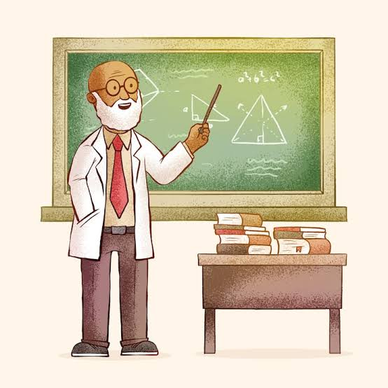

Créditos do Projeto

Professores Orientadores
Celia Barufaldi, Waldir Junior
Disciplina: Desenvolvimento Web / Informática
Alunos Desenvolvedores
Arthur, Eduardo Costa, Eduardo Lucas, Guilherme
* Projeto disponibilizado na área do servidor da escola.